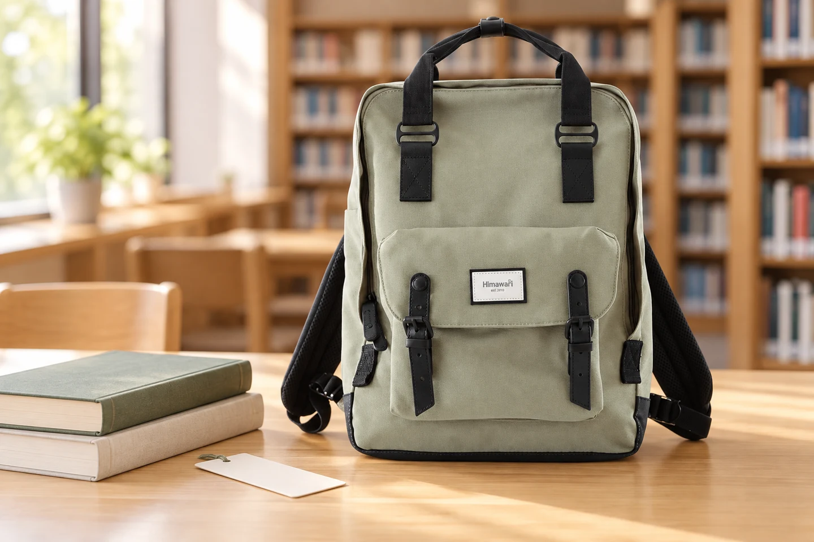

도서관 가는 백팩: 빌린 책을 반납하는 날의 준비

9월 13일 예약분을 9월 14일에 보완 발행했습니다.
도서관에 다녀오는 길의 가방은 출발할 때와 내용물이 다릅니다. 읽은 책을 돌려주고 새로운 책을 빌리면 무게와 부피도 달라집니다. 책을 보호하는 방법뿐 아니라 무엇을 반납하고 무엇을 다시 가져올지 순서를 정해 두면, 창구 앞에서 가방 전체를 뒤지는 일이 줄어듭니다.
반납할 책을 한곳에 모으기
출발 전 대출 목록과 책 표지를 나란히 확인합니다. 가족이 함께 빌린 책이라면 누구의 대출인지도 구분해 보세요. 책 사이에 개인 메모나 영수증, 책갈피가 남아 있지 않은지 펼쳐 보고, 함께 빌린 별책이나 부속 자료가 있다면 빠뜨리지 않게 챙깁니다. 가방 안에 있는 책을 전부 반납 대상으로 생각하지 않는 것이 시작입니다.
내 책과 빌린 책의 경계 만들기
공부할 개인 책도 가져간다면 반납할 책과 섞이지 않게 얇은 파일이나 책 커버로 경계를 만듭니다. 대출 도서에 직접 접착 라벨을 붙여 표시하지 말고, 별도 메모에 제목을 적는 식으로 구분해 보세요. 반납할 묶음을 먼저 꺼낼 수 있는 순서로 세우고, 표지 끝이 지퍼에 걸리지 않는지 확인합니다.
빈자리를 남겨 두는 이유
돌아올 때 새로 빌릴 책이 생길 수 있으므로 출발 가방을 가득 채우지 않습니다. 빌릴 권수만 정하기보다 이미 넣은 개인 물건과 함께 들 수 있는지 생각해 보세요. 크고 두꺼운 책을 발견했다면 현장에서 무리하게 넣지 말고 가져갈 방법부터 정합니다. 사진 속 가방의 수납량은 연출 장면으로 판단하지 않습니다.
반납 확인까지 끝내기
반납 장소의 안내에 따라 책을 처리한 뒤 접수 화면이나 대출 목록에서 반납 상태를 확인합니다. 확인 방식은 이용하는 도서관마다 다를 수 있습니다. 내 책과 회원증, 휴대전화가 다시 가방에 들어갔는지도 살펴보세요. 새 책을 담기 전 가방 안이 비었는지 한 번 보는 짧은 동작이 다음 독서 시간을 편하게 만듭니다.
참고·안내
- Himawari No.1010 제품 정보
- 실제 Himawari No.1010 제품 사진을 참조한 AI 연출 이미지입니다. 주변 소품은 구성품이 아닙니다.
자주 묻는 질문
사진 속 가방의 수납 크기는 어떻게 확인하나요?
이미지의 비율만으로 수납 가능 여부를 판단하지 말고, 선택한 옵션의 실제 치수와 입구 형태를 제품 안내 또는 문의로 확인하세요.